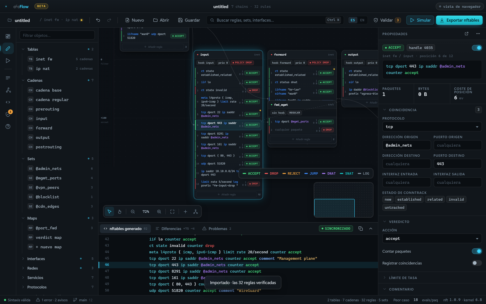
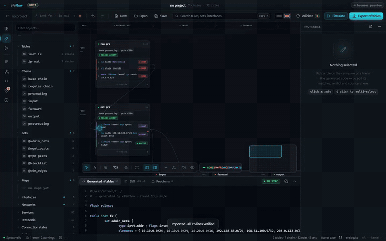
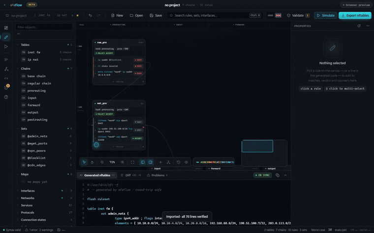

The rule that never fires
Not syntax — order. And order is invisible in a text file.
table inet filter {
chain input {
type filter hook input priority filter; policy drop;
ct state established,related counter accept
tcp dport { 80, 443 } counter accept
ip saddr 10.10.0.0/24 tcp dport 443 accept # can never match
}
}
The last rule can never match — everything it could accept, the
rule above it already accepted. Four rules fit on a screen and you can see it. Now put it at
line 411 of 800, behind two jumps, in a table you inherited. Nothing is broken.
nft -c is happy. The rule is simply dead, and nothing in the file says so.
eFeFlow reads your ruleset the way the kernel does, and tells you what it found.
What eFeFlow does
Everything is derived from your rules, never authored — and undoable.
Build from scratch
Start from an empty table and compose tables, chains and rules visually — pick hooks, priorities, matches and verdicts from menus, and eFeFlow writes correct nft as you go. No blank file to stare at, no syntax to memorise.
Simulate a packet
Describe one, watch it walk your chains rule by rule through every hook, and see exactly which rule decides it — the same verdict your exported ruleset produces.
Find rules that can never match
Shadowed rules, conflicting DNAT targets, chains that trust conntrack but never drop invalid — derived from your rules, never guessed.
Import what you already run
Paste nft list ruleset and it proves the round-trip line by line before it imports a thing.
Apply with a net
The commit-confirm rollback arms on the firewall, so the rule that cuts you off cannot stop you undoing it. Never lock yourself out again.
Export real nft source
Not a config format of its own. What comes out is exactly what you would have written by hand.
Both IP families, modelled properly
accept ends the chain, not the packet. ip6 saddr constrains IPv6 and nothing else. A dormant table is not walked at all.
Start from an empty table, not a blank file
eFeFlow is a full editor: build a whole firewall from nothing, visually, and read out real nft source at the end.

Which rule is going to accept this packet?
Describe the packet and watch it go — hook by hook, chain by chain, rule by rule, to a verdict.

The rule you did not know was dead
eFeFlow works it out from subsumption: rule A shadows rule B when every packet matching B already matches A, and A comes first and is terminal.

- Shadowed — a rule an earlier one already decides
- Conflict — overlapping DNAT rules with different targets
- Dormant — a whole table loaded and not running
- Unbounded set — a set filled by traffic with no
sizeortimeout - Full set — a set at 90% of its
size, past which the kernel silently refuses elements - Merge — rules differing only by port, which one set lookup replaces
- Unused — a set loaded into the kernel that no rule consumes
- Hardening — a chain that trusts conntrack but never drops
invalid - Resilience — a log rule with no rate limit
- Cold — rules the kernel says have matched nothing
Beta — but it no longer has no mileage
fetched from public repositories, every one a file nft itself accepts — and every one comes back out meaning exactly what it meant going in. Each was loaded into an empty netfilter instance and listed back; ours was loaded the same way, and the kernel cannot tell the two listings apart. 3,017 come back byte for byte as well — 99.8% of 84,100 lines. 1,098 automated assertions stand behind the parser, analyser, packet evaluator and interface.
Download
Free and open source under the MIT licence. Native desktop app for every platform.